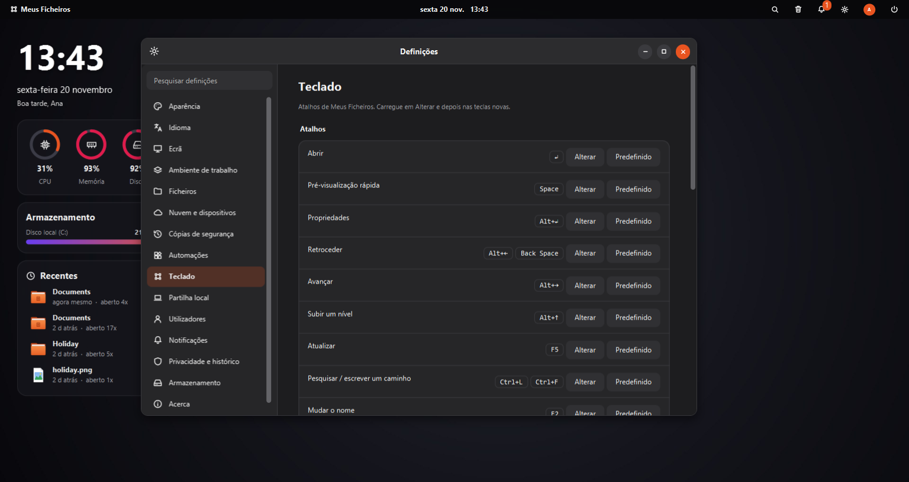

Atalhos de teclado
Todos os atalhos de Meus Ficheiros podem ser alterados em Definições › Teclado: carregue em Alterar e depois na nova combinação de teclas. O FileExp avisa-o quando uma combinação já está em uso. Predefinido repõe um atalho e Repor todos os atalhos repõe-nos todos. Só são guardados os atalhos que alterou.

Meus Ficheiros#
| Ação | Atalho predefinido |
|---|---|
| Abrir | Enter |
| Pré-visualização rápida | Espaço |
| Propriedades | Alt+Enter |
| Retroceder | Alt+← ou Backspace |
| Avançar | Alt+→ |
| Subir um nível | Alt+↑ |
| Atualizar | F5 |
| Pesquisar / escrever um caminho | Ctrl+L ou Ctrl+F |
| Mudar o nome (vários se houver vários selecionados) | F2 |
| Nova pasta | Ctrl+Shift+N |
| Copiar | Ctrl+C |
| Cortar | Ctrl+X |
| Colar | Ctrl+V |
| Selecionar tudo | Ctrl+A |
| Mover para o lixo | Delete |
| Eliminar permanentemente | Shift+Delete |
| Anular | Ctrl+Z |
| Refazer | Ctrl+Y ou Ctrl+Shift+Z |
| Mostrar ficheiros ocultos | Ctrl+H |
| Novo separador | Ctrl+T |
| Fechar separador | Ctrl+W |
| Separador seguinte | Ctrl+Tab |
| Separador anterior | Ctrl+Shift+Tab |
| Vista dividida | F3 |
| Copiar para o outro painel | Shift+F5 |
| Mover para o outro painel | Shift+F6 |
| Fechar Meus Ficheiros / limpar a pesquisa | Esc |
Enquanto escreve na caixa de pesquisa, as teclas de edição de texto (Ctrl+C, Ctrl+V, Backspace, Espaço…) atuam sobre o texto, não sobre os ficheiros.
Sem rato#
Tudo no FileExp se faz com o teclado, e um leitor de ecrã (Narrador, NVDA, Orca) diz o que tem o foco.
| Onde | Teclas |
|---|---|
| Em qualquer lado | Tab / Shift+Tab passam entre as partes do ecrã; um contorno mostra o que tem o foco (só enquanto usa o teclado) |
| Ficheiros (a grelha) | Setas passam entre ficheiros e pastas, Home / End vão ao primeiro / último; Shift+setas selecionam vários; Enter abre |
| Ficheiros | Tecla Menu ou Shift+F10 abre o menu do item selecionado (ou da pasta) |
| Menus | ↑ / ↓ passam entre opções, → abre um submenu, ← volta, Enter escolhe, Esc fecha e o foco volta para onde estava |
| Diálogos | Tab fica dentro do diálogo, Enter confirma, Esc cancela |
| Definições | ↑ / ↓ entre as páginas; cartões, cores e interruptores funcionam com Espaço ou Enter |
Um leitor de ecrã diz, para cada ficheiro, o nome, o tipo, o tamanho ou os pormenores, as etiquetas e se está selecionado; para um diálogo, o título e a mensagem.
Definições › Aparência › Alto contraste mostra o FileExp a preto, branco, amarelo (foco) e ciano (seleção), com todas as cores a 7:1 ou mais. Se o sistema pedir menos animações (Windows: Efeitos de animação desligados; GNOME: animações desligadas), o FileExp também não tem nenhuma, nem no ecrã de arranque.
Ambiente de trabalho#
| Ação | Atalho |
|---|---|
| Abrir Meus Ficheiros | Ctrl+Espaço |
| Definições | Ctrl+, |
| Bloquear | Ctrl+Alt+L |
| Ecrã inteiro | F11 |
Pré-visualização rápida#
| Ação | Tecla |
|---|---|
| Ficheiro anterior / seguinte | ← / → |
| Abrir no seu programa | Enter |
| Fechar | Espaço ou Esc |